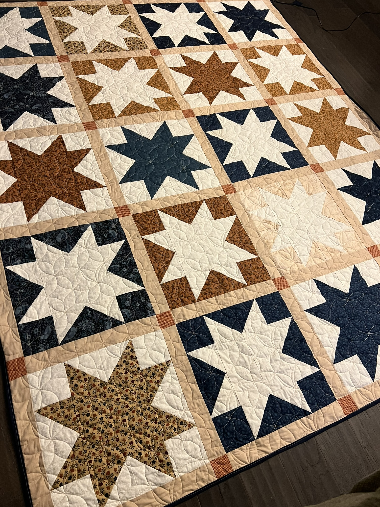

Finally a quilt for myself! I had purchased my fabrics in September of 2023 from Field's Fabrics, but needed to finish Karissa's quilt first.
In April of 2024, my roommates went on a trip to Ireland and England, and my boyfriend flaked on spending some much needed time alone together. This surplus of time alone listening to Taylor Swift's 'The Tourtured Poets Department', resulted in a much needed break up, and my favorite quilt to date!
I decided on a more traditional style for my own quilt. My previoius work on Karissa's quilt prepared me for triangles. I cranked out triangles at 4 or 8 at a time, and took over the dining room table for the entirety of the girls' trip. I alternated cream colored ohio stars on patterned background, and patterned ohio stars on cream background.
Although I did lots of math before starting, I made a simple multiplication error that briefly stopped me. I had planned to construct a twin sized quilt, so I ended up adding boarders to compensate for my little error. And I am glad I did! I think the tan boarders look awesome. I had this long armed by Buffalo Flatts again; this time splurging for a non-penny panto!
My quilt top was completed in 2 weeks; clearly a needed coping mechanism. I attached my navy blue binding myself, and have been using it since May of 2024! Use and time have softened the fabric and it is now a cozy addition to my basement blankets.
